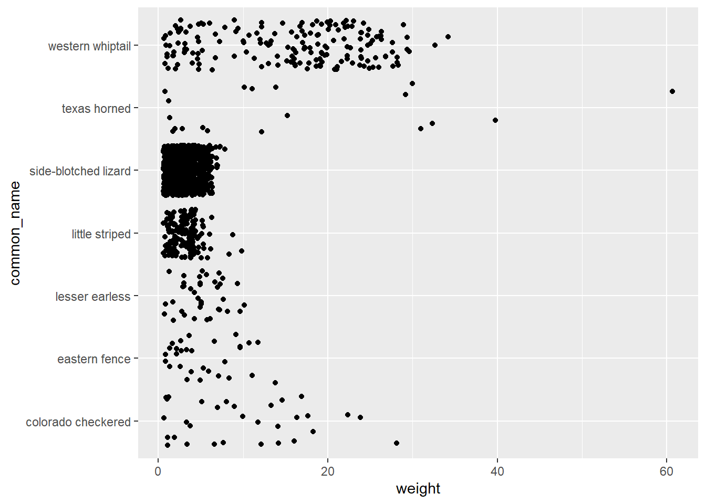

D Lab 4: visualizing data in R (part 2) (2025)
D.1 Goals
In this lab, we will learn several more plotting skills.
By the end of this lab, you should be able to:
- use
geom_jitter()to deal with overlapping points, - adjust attributes like
colorandfill, rather than only using them as aesthetics with a particular variable, - add themes to make your plots more attractive,
- customize your x- and y-axis labels and add a plot title.
D.1.1 Resources
We will work with a new data set today based on lizard measurements. These data have been tidied up by data scientist Allison Horst. Much of what we explore today has been modified by a plotting tutorial she created, which is available online here: https://allisonhorst.github.io/rice-data-viz/.
D.3 Part 1: New data! (5 minutes, instructor leading)
This is mostly review from what you learned at the end of Monday’s lecture.
D.3.1 Loading data
You can load data into R in several ways. We started with the easiest: loading
a R package that includes some data frames. Another pleasantly simple way
to load data is read a csv (spreadsheet) file directly from where it is
hosted online. Let’s do that now, with the help of the read.csv() function.
# loading a csv file from this URL. The header argument just tells R
# that the first row is not data, but is instead a header
# with column names
lizards <- read.csv("https://raw.githubusercontent.com/allisonhorst/rice-data-viz/gh-pages/data_tidy/lizards.csv",
header = TRUE)
# loading tidyverse for our plotting and data wrangling needs
library(tidyverse)D.3.2 About these data (for reference, not for discussion during lab)
The full data are available here, and are from another long-term ecological research site, this time for lizards in New Mexico.
The data include time (date of trapping), species names, some
aspects of where they were sampled, some qualitative features (age/sex), and
some quantitative variables like sv_length (snout-vent length).
For reference, here are some plots we made at the end of Monday’s lecture.
They will not appear because this code chunk is set to eval = FALSE.
# scatterplot of length vs. body weight
ggplot(data = lizards, aes(x = total_length, y = weight)) +
geom_point()
# reminder that line plots are rarely appropriate
ggplot(data = lizards, aes(x = total_length, y = weight)) +
geom_line()
# AHHHH, THOSE LINES ARE MEANINGLESS AND SCARY`
# visualizing a single continuous variable with a histogram
ggplot(data = lizards, aes(x = total_length)) +
geom_histogram()D.4 Independent work (25 minutes)
Let’s begin with a new geometry called geom_jitter(). When do we need it?
When we have lots of points that have the exact same value. In that case,
you can’t fully see all your data points. geom_jitter() is just a variant of
geom_point() that will slightly randomly shift points so you can see
points that are on top of each other more clearly.
Compare these two plots.
# many points have the exact same weight, making this look sparse
ggplot(data = lizards, aes(y = common_name, x = weight)) +
geom_point()
# the jitter will reveal just how many measurements we have
ggplot(data = lizards, aes(y = common_name, x = weight)) +
geom_jitter()
D.4.1 Task 1: working with geom_jitter()
Make the same two plots for snout-vent length (sv_length) rather than
weight. Hint: copy and paste, then change the column/variable inside of aes().
D.4.2 Making consistent changes to data attributes
We use aes() when we want to use a variable/column from our data and
represent it with a visual attribute (e.g. x- or y-value, color, size).
But we might want to stylize our plot to consistently have blue points,
or red shapes, or larger lines. Here is an example.
ggplot(data = lizards, aes(y = common_name, x = sv_length)) +
geom_boxplot(color = "blue",
fill = "light green",
linetype = "dotted")
D.4.3 Task 2: changing attributes throughout a plot
Using the same aesthetics, create a violin plot. Make the interior of each violin
colored “light blue” with a “blue” border. Use the argument width = 0.8 to
make the violins a bit skinnier (80% of their usual thickness).
D.4.4 Adding a theme
In lecture we have briefly noted that adding a theme layer provides a quick way to make the plot more visually pleasing. Here we can demonstrate a not-super-attractive theme, and then you can explore.
# creating a violin plot with a dark theme
ggplot(data = lizards, aes(y = common_name, x = sv_length)) +
geom_violin(fill = "light blue") +
theme_dark()
Check out the other themes here: https://ggplot2.tidyverse.org/reference/ggtheme.html.
D.4.5 Task 3: themes
Create a scatterplot with snout-vent length on the x-axis and weight on the
y-axis. Add a theme layer using one of the themes from the website above.
Try a few themes until you find one you like, and don’t just use
theme_dark() again.
D.4.6 Customizing labels
As we have seen in lecture, adding a labs() layer is a simple way to make x- and y-axis
labels that are clearer to your reader.
# adding labels to our previous plot
ggplot(data = lizards, aes(y = common_name, x = sv_length)) +
geom_violin(fill = "light blue") +
theme_dark() +
labs(x = "snout-vent length (mm)",
y = "",
title = "Length distributions for New Mexico lizards")
The sv_length variable was unclear, so I make the new x-axis label state
the full name (and units, which are listed in section 2.2 of Allison Horst’s tutorial).
I also elected make the y-axis label blank, because common name is self-explanatory.
To do so, I just make the y-axis label be a set of empty quotes ““.
Finally, I added a title.
D.4.7 Interlude: finding data for the Data Story assignment
One particularly useful source for ecological data is data dryad. https://datadryad.org/
Take a moment now to search for a topic you are interested in, for example “desert tortoise conservation” or “american bison”. You might find a number of data sets related to your interests. For now, just try to make sense of the page for a data set, e.g. https://datadryad.org/stash/dataset/doi:10.5061/dryad.k3j9kd56m
There will always be a link to download the data (sometimes multiple files). On the right side, there is sometimes a link to a published paper about the data. For the tortoise data, it is https://academic.oup.com/beheco/article/28/4/1075/3808891.
And there is often a readme.txt file with details about exact what the data in each column mean. In this case there isn’t, but perhaps the published paper can help you make sense of the data.
Spend five minutes searching around for potential data sets.
Don’t get too excited yet! Find the right, usable data set that you really
understand is way more valuable than finding a confusing data set on a
cool topic. So just explore for now.
D.4.8 Task 4: Nice labels (time permitting)
To prep for this next task, I will preview a data-tidying skill we will learn next week.
# creating a data frame with only little striped lizards
# make sure the tidyverse is loaded before using filter() in this way
lizards_little_striped <- filter(lizards,
common_name == "little striped")Create a histogram of total_length for our new data frame, lizards_little_striped.
change the fill and/or color attributes to make it nice-looking, add a theme,
and add better labels. The y-axis label should be “frequency”. You can decide
on the x-axis label and title, but make sure they are descriptive.
D.5 Wrapping up (5 minutes)
Knit your file to HTML, and save the original Rmd, then add them to your WFC 98 folder on Google Drive.
D.6 Extra material for interest (will not be assessed on any homework)
Work on HW 3.
Look over the next section of the tutorial, which covers some additional skills for plot customization: https://allisonhorst.github.io/rice-data-viz/#5_Advanced_ggplot2_customization
You will discover a lot of ways to customize the finer-scale details of your plots. Play around to create a beautiful and effective plot of some variables of your choosing. Consider layers like scales, for example plotting using a logarithmic scale rather than linear, or adjusting the spacing of breaks/tick marks on a plot.